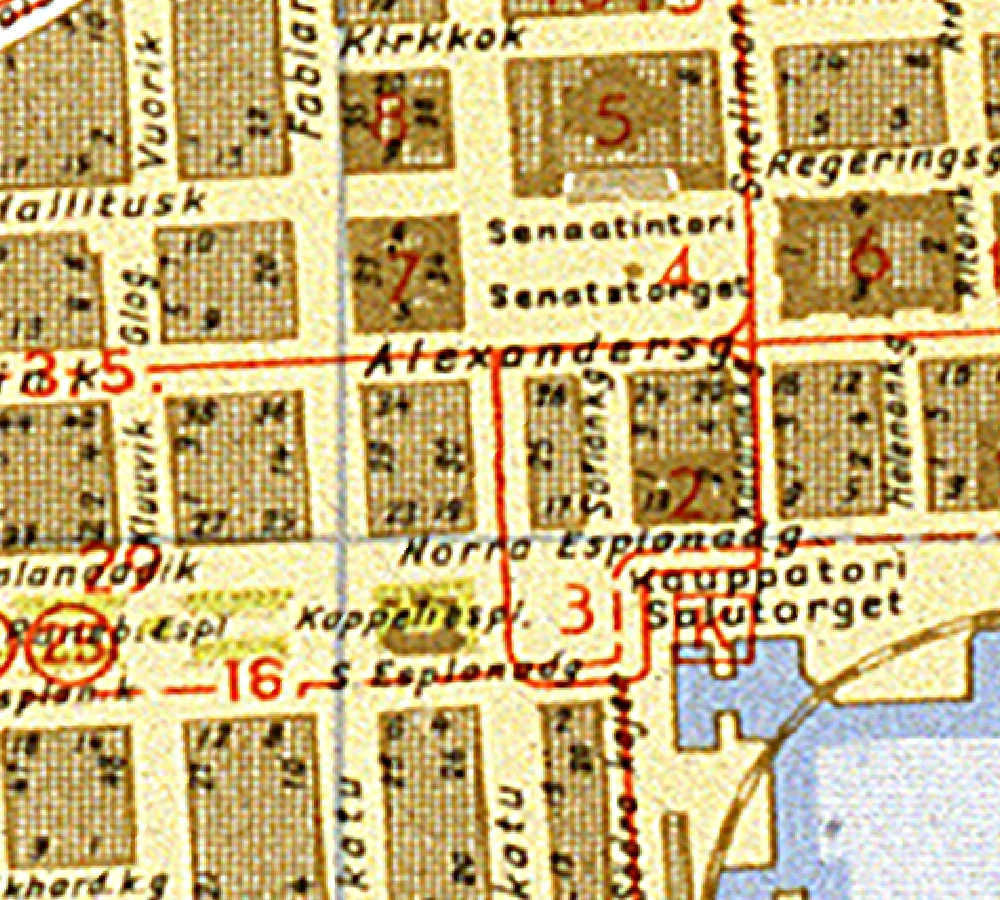

HELSINKI · OLYMPIAKESÄN AIKAAN
Kolera-altaan
laidalla
Arvo Kajantie · Helsingin kaupunginmuseo · 1950–1959
Vedä kuvaa tai käytä nuolinäppäimiä. Lähennä yksityiskohtia pluspainikkeella.
Kajantien kuva on 1950-luvulta. Vuoden 1952 ajankuva täydentyy Dilénin kuvalla ja matkailijakartalla.
Mitä kuvassa näkyy?
Kaupungintalo
Vaalea, kolmikerroksinen julkisivu rajaa toria pohjoisessa. Rakennus aloitti Seurahuoneena. Dilénin vuoden 1952 kuvassa erottuu sisäänkäynnin matala pylväskatos.
Torikojut ja puuveneet
Kajantien kuvassa veneet täyttävät altaan ja kojurivi jatkuu torin laidalla. Helsingin kaupungin mukaan kalastajat myivät saalistaan myös suoraan veneistä.
Vuoden 1952 Kauppatori
Matkailijakartta näyttää torin sijainnin Eteläsataman, Esplanadin ja Senaatintorin välissä. Kartta ja Dilénin valokuva ovat vuodelta 1952.
Kuvat ja lähteet
Kuvassa näkyvät rakennukset, ihmiset, kojut ja veneet ovat Kajantien valokuvasta. Syvyystasot ja pieni kameraliike ovat tulkintaa. Zoomaus suurentaa samoja kuvapisteitä. Kuvan peittoon jäävät alueet pysyvät peitossa.
Kolera-allas, alkuperäinen valokuva
Kaupungintalo vuonna 1952

Matkailijakartta vuodelta 1952
